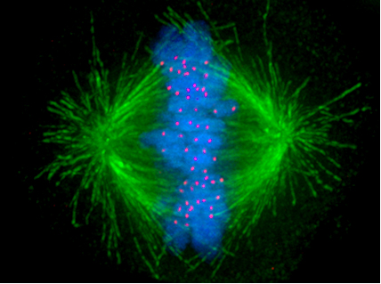

MACHINE LEARNING BASED CLASSIFICATION OF CYCLIN POTEINS (BIO-INFORMATICS)


Image Reference: http://www.cherrybiotech.com/portfolio/human-cells-temperature-control-of-cell-cycle-2
- July – December 2015
- Team of four
1) We identified whether a given sequence is a Cyclin protein or not using support vector machine (SVM) classifiers. Cyclin proteins are a family of proteins that control the cell progression.
2) The features used for classification were Amino Acids (20 features), Dipeptide bonds (400 features), Secondary Structure Composition (SSC), Position Specific Substitution Matrix (PSSM) Composition and Hybrid composition.
3) We carried out this classification using Linear, Polynomial, RBF and sigmoidal kernels after which we compared the results obtained from the different kernels.
Image Reference: http://www.cherrybiotech.com/portfolio/human-cells-temperature-control-of-cell-cycle-2